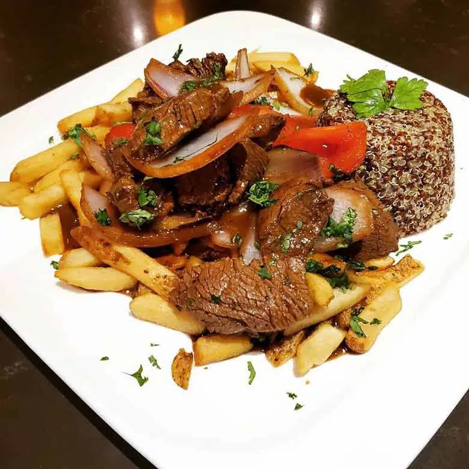

Lomo Saltado

Descripción
El Lomo Saltado es una de las comidas con carne más deliciosas de la gastronomía peruana,
este plato popular puede prepararse con cualquier tipo de carne, la tradición nos dice que debemos prepararlo con «Lomo fino»,
pero al pasar de los años muchas personas lo han preparado con pollo, lomo o cualquier carne,
lo más importante es disfrutar de este platillo con alguien especial.
Ingredientes
- 1 kg de lomo de res
- 2 cebollas rojas
- 4 tomates
- aji amarillo
- 1 poco de cebolla china
- 1 cda de ajo
- 8 cda de vinagre
- 4 cdas de sillao
- sal, pimientas y comino
Pasos
- Cortamos dos cebollas grandes rojas y 4 tomates chicos en tiras gruesas, un ají amarillo en cortes delgados, un poco de cebolla china, una cucharada de ajo molido y dejamos listos los ingredientes.
- Necesitamos lomo fino de Res o bistec, cortado en tiras gruesas, arrancamos las hojas de 8 tallos de culantro.
- Listas ocho cucharadas de vinagre mezclado con cuatro cucharas de sillao.
- Para acompañar ya debemos tener el arroz blanco preparado y las papas fritas bien crocantes.
- Una vez que todo está listo, echamos aceite vegetal en una sartén grande, subimos el fuego al máximo y cuando esté botando humo echamos la mitad de la carne que ya habremos sazonado con sal y pimienta.
- Echamos un poco de la mezcla de sillao y vinagre, colocamos la mitad de la cebolla por un minuto y retiramos, ponemos la otra mitad por otro minuto y retiramos.
- Echamos la mitad de los tomates, por dos minutos y retiramos, luego echamos la otra mitad, por dos minutos, retiramos y listo.
- Hemos logrado un sabor increíble para la carne, ahora vamos a mezclarlo todo, en la misma sartén echamos aceite y dejamos que caliente.
- Añadimos ajo molido por unos segundos, toda la carne, todo el tomate, añadimos el ají amarillo, toda la cebolla y lo que queda del sillao y vinagre.
- Dejamos por unos minutos, añadimos la cebolla china y las hojas de culantro, y listo, nuestro lomo saltado ya quedo.